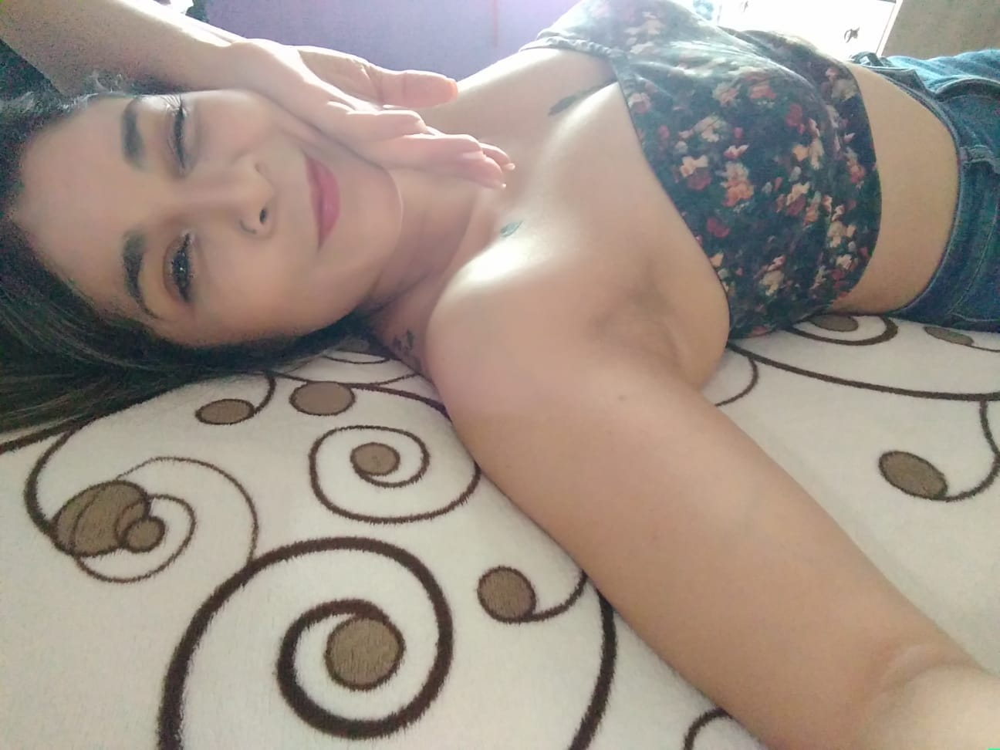
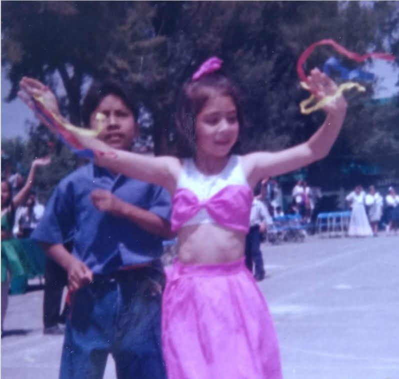
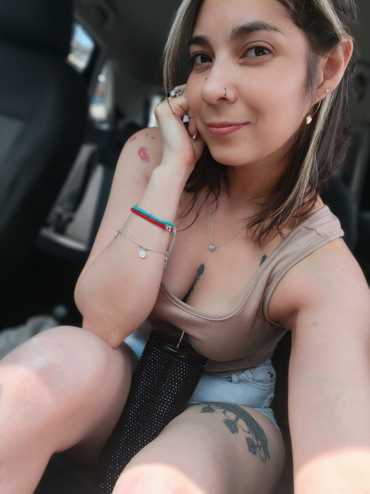
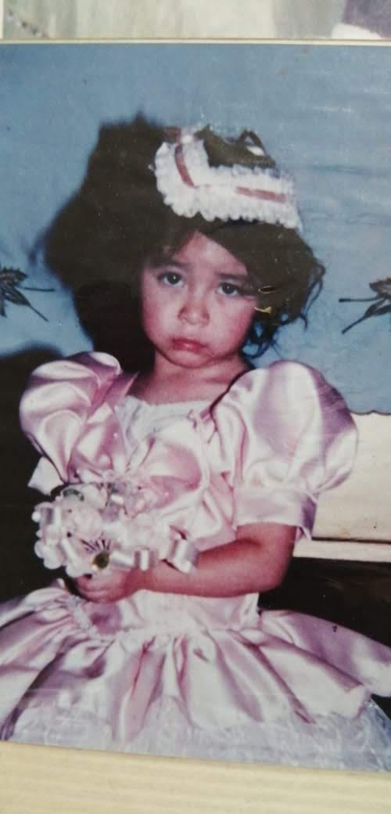
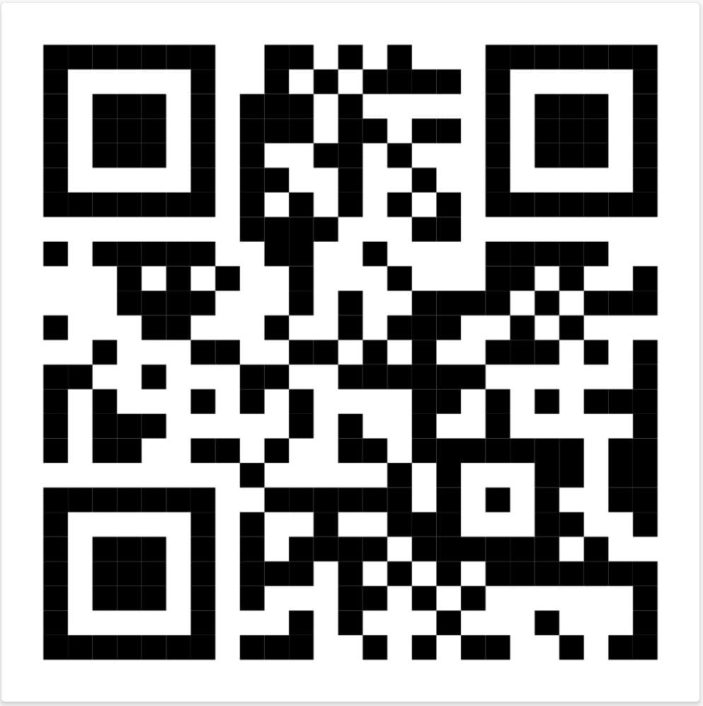
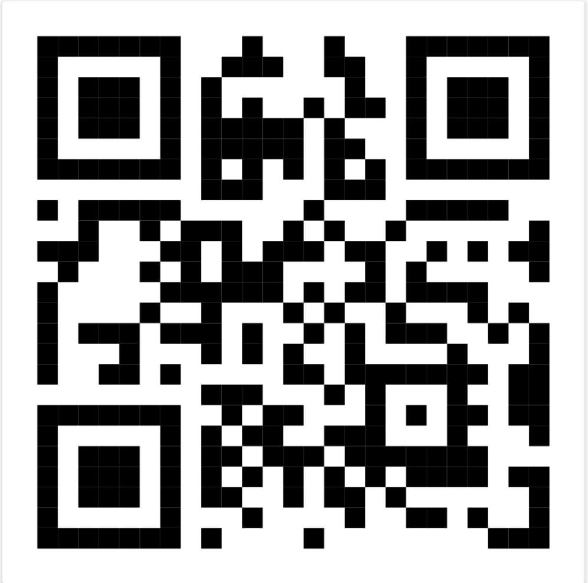

Dale play ✨
Solo tu eres quien hace que los breves momentos sean inolvidables.

Un espacio especial solo para ti
Sé que tal vez esta no sea la manera más común ni la más efectiva de decir las cosas en estos tiempos, pero si de algo tengo la total certeza in el corazón, es de que vale completamente la pena hacer una pausa y escribirte esto. Antes de continuar y adentrarme en lo que realmente quiero expresarte, me gustaría aclarar un par de puntos muy importantes. Lo primero es que no quiero, bajo ninguna circunstancia, que llegues a tomar esto como un malentendido o que te cause la más mínima molestia o incomodidad; mi intención está muy lejos de eso. Lo segundo es que todo lo que leerás a continuación nace con el único y sincero propósito de hacerte saber que, a pesar de la distancia, del tiempo y de todas las circunstancias que nos rodean, siempre serás una persona sumamente especial y significativa en mi vida. Una vez aclarado esto, me permito continuar. Por medio de estas líneas, quiero desearte un muy feliz, hermoso y bendecido cumpleaños. Cumplir un añito más de vida siempre nos pone a reflexionar; a veces podemos ver el paso del tiempo como algo nostálgico o abrumador, pero créeme que cada año, cada momento y cada día compartido con las personas que te aman vale completamente la pena. Este año que dejas atrás ha sido parte de tu aprendizaje, y este nuevo que comienzas hoy es una página en blanco llena de oportunidades. No te voy a mentir: hoy, en tu día, me encantaría poder estar a tu lado. Me fascinaría la idea de sorprenderte, llevarte un ramo de flores enorme, de esos que apenas se pueden cargar, y por qué no, unos buenos mariachis que te canten las mañanitas, acompañados de regalos que te hicieran sonreír. Sé que eso es lo que te mereces, pero también soy consciente de la realidad y sé perfectamente que en este momento no sería lo adecuado ni lo correcto. He aprendido a respetar nuestros espacios, y por eso elijo enviarte este abrazo en forma de letras. Me habría encantado acompañarte físicamente en esta nueva vuelta al sol, poder tomar tu mano con fuerza, mirarte a los ojos y darte ese abrazo contenedor que las palabras a veces no alcanzan a dimensionar. Quería decirte todo esto en persona, pero hoy te entrego mi cariño sincero a través de cada uno de los caracteres que llevo escritos. Tengo la absoluta convicción de que en esta nueva etapa que hoy inauguras van a venir cosas muchísimo mejores. Este nuevo comienzo será más brillante, más maduro y más pleno de lo que fue el ayer. Si algo me queda claro, es que te has convertido en una mujer increíblemente capaz de todo lo que se propone. Esa fuerza interior, esa determinación para salir adelante y esa chispa única son, sin duda, las cualidades que siempre me han gustado, cautivado y admirado de ti. Este nuevo año te sonríe de la mejor manera posible y te abre los brazos. No hay nada mejor en esta vida que aprender a disfrutar el presente, aprovechar cada instante, cada amanecer y cada oportunidad que se te presente, porque tú, Ana, te mereces solo lo más bonito que el mundo pueda ofrecer. Soy muy maduro al admitir y reconocer que yo no pude darte todo lo que te merecías en su momento, pero créeme que me llena de paz saber que este año será distinto y mejor para ti. Lo sé porque eres una mujer fuerte, decidida y, en el buen sentido de la palabra, muy "cabrona"; de esas mujeres que no se rinden ante nada, que tienen un corazón gigante y muchísimo amor, alegría y éxito que dar a quienes te rodean. Eres eso, Anita, y una infinidad de cosas hermosas más que a veces ni tú misma te alcanzas a creer. Así que hoy, en el día de tu cumpleaños, te deseo el mayor de los éxitos, una salud inquebrantable y una felicidad que te desborde. Deseo de todo corazón que esta nueva oportunidad y este nuevo comienzo te abracen con fuerza, te cuiden y te entreguen solo cosas buenas. Que nunca te falten motivos para sonreír y que la vida te devuelva multiplicada toda la luz que le das al mundo. Con todo mi respeto y cariño de siempre, feliz cumpleaños, Anita.
Solo tu eres quien hace que los breves momentos sean inolvidables.
Tu día llega lleno de alegría, como un regalo que la vida trae, el tiempo se detiene en este día y una hermosa luz sobre ti cae. Que el mundo te regale sus colores, que el cielo brille siempre en tu ventana, y el año que comienzas traiga flores para cuidar tu vida cada mañana. Celebro que existas con respeto, con un cariño limpio y verdadero; te guardo en mi recuerdo muy secreto y siempre verte bien es lo que quiero

Creciste con la gracia de una rosa, dejando atrás la niña del ayer, y hoy el tiempo te vuelve tan hermosa, siendo la gran mujer que admiro ver. Me llena de un orgullo silencioso mirar la luz que de tu alma nace; ver tu camino alegre y generoso, y el bien que tu presencia siempre hace. Que el cielo te regale un año tierno, repleto de momentos de alegría; te cuido en la distancia de este invierno, deseando lo mejor para tu día.

Los días de alegría son un arte que llenan de color el corazón, y hoy el cielo se viste para amarte cantando una preciosa melodía. Qué bello es ver el tiempo en tu sonrisa, mirar la luz que de tus ojos nace, sentir cómo la vida va de prisa y el bien que tu presencia siempre hace. Que este nuevo año sea un camino repleto de momentos de ilusión, que encuentres la alegría en tu destino y guardes paz en cada decisión.

Admiro la grandeza de tu vida, la luz que de tu alma siempre emana; tu forma de avanzar tan decidida, trayendo un sol hermoso a la mañana. Es tierno este cariño que te guardo, profundo y tan sincero en su nobleza; no busca más respuesta que cuidarte y ver cómo progresa tu belleza. Deseo que el destino te bendiga, que cubra tu camino de alegría; te cuido en la distancia como amiga, deseando lo mejor para tu día.

Te mereces vivir experiencias que te llenen el alma. Espero que este día se quede grabado en tu memoria para siempre como uno de los más felices.

Guarda muy bien esta fecha en tu calendario, porque ese día vas a perder la voz de tanta emoción.